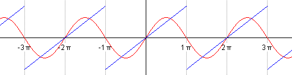
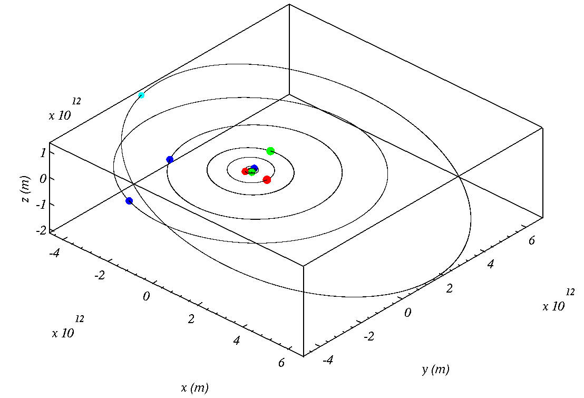

Solar system simulation
- Overview
-
In this exercise you will set-up a simulation of the solar system in Fortran and use Python to analyse the output. Solar system modelling is still an active research area, and recent examples of where it has been used are studying whether there are outer planets (planet X), or the effects of tidal forces on the 11 / 22 year Solar cycle.
You will download the files from GitHub, compile the code, set-up and run the model, and analyse the output file using Python.
Download the practical sheet here and work through it:
- Newton's Law of Gravitation
-
In order to simulate the orbits of the planets, we make use of Newton's Law of Gravitation and treat each body as a point mass. This enables us to calculate the force on each body in each dimension.
More info on Newton's Law of gravitation...This states that the force between two masses, \(m_i\) and \(m_j\), separated by vector \(\vec{r_{i,j}}\) is\[ \vec{F}_{i,j}=-G\frac{m_i m_j}{r_{i,j}^3}\vec{r_{i,j}} \]
Our coordinate system is cartesian based (i.e. \(x,y,z\)) so we must write down Newton's Law of gravitation using this system. The vector \(\vec{r_{i,j}}\) can be written down in column form as:
\[ \vec{r_{i,j}}=\left(\begin{array}{c} x_j-x_i \\y_j-y_i \\z_j-z_i \end{array} \right) \]
and thus its magnitude is
\[ |\vec{r_{i,j}}|=\sqrt{\left(x_j-x_i\right)^2 +\left(y_j-y_i\right)^2 +\left(z_j-z_i\right)^2} \]
Hence, the components of the force in the \(x, y\) and \(z\) direction are:\[ \left(\begin{array}{c} Fx_{i,j}\\ Fy_{i,j}\\ Fz_{i,j} \end{array}\right) =-G\frac{m_i m_j}{\left({\left(x_j-x_i\right)^2 +\left(y_j-y_i\right)^2 +\left(z_j-z_i\right)^2}\right)^{3/2}} \left(\begin{array}{c} x_j-x_i \\y_j-y_i \\z_j-z_i \end{array} \right) \]
- Newton's 2nd Law of Motion
-
For the motion of the planets we apply Newton's 2nd Law of motion, which states that the force applied to a mass is equal to its acceleration multiplied by its mass. Hence, Newton's Second Law of Motion enables us to use the force calculated from Newton's Law of Gravitation to the motion that the bodies take in space.
More info on Newton's 2nd Law...Newton's 2nd Law states for net force, \(\vec{F}\), applied to object mass, \(m\) causing the object to accelerate with acceleration, \(a\)
\[ \vec{F}=m\vec{a} \]
Hence, in a Cartesian coordinate system, to solve for the motion of each object (i.e. find the \(x_i,y_i,z_i\) positions with time) we must solve three differential equations for the forces in each dimension, \(Fx_{i,j}, Fy_{i,j}, Fz_{i,j}\):
\[ \begin{eqnarray} Fx_{i,j} &=& m_i\frac{d^2 x_i}{dt^2}\\ Fy_{i,j} &=& m_i\frac{d^2 y_i}{dt^2}\\ Fz_{i,j} &=& m_i\frac{d^2 z_i}{dt^2} \end{eqnarray} \]
here, \(m_i\) is the mass of the \(i^{th}\) body in the solar system, and \(t\) is time.
As we have discussed when solving 2nd order ODEs using approximate methods we split each 2nd order ODE into two 1st order ODEs (those having a first order derivative). Clearly the equations to solve are 2nd order differential equation, but we can turn them into 1st order differential equations by specifying another 3 equations for the 3 components of velocity, \(vx_{i}, vy_{i}, vz_{i}\), which give us the following 6 equations to solve for each body in the solar system:
\[ \begin{eqnarray} Fx_{i,j} &=& m_i\frac{d vx_i}{dt}\\ Fy_{i,j} &=& m_i\frac{d vy_i}{dt}\\ Fz_{i,j} &=& m_i\frac{d vz_i}{dt}\\ vx_i &=& \frac{d x_i}{dt}\\ vy_i &=& \frac{d y_i}{dt}\\ vz_i &=& \frac{d z_i}{dt} \end{eqnarray} \]
- Code to simulate planetary orbits
-
The main Fortran file is contained within the
solar_system.f90file. If interested you can take a look at this file by opening it within a text editor.More info on solar_system.f90...We need to compile the code into a machine code that the computer can execute. To do this we type
make
followed by the enter key.There is another file called
namelist.in. This is the input file that you can edit. You will have to be careful how you edit and save the file as the program expects the input to be in a certain format.More info on namelist.in...You will see that we are setting the initial x, y, and z coordinates of the planets, in addition to their velocities along x, y, and z.
We also set the values of \(Gm\) for each object and a few extra variables like which bodies interact with all others as well as time-steps.The data generated lend naturally to Fourier analysis because they are periodic. We will now cover some fundamentals of Fourier analysis
- Fourier series
-
The Fourier series is a powerful concept in the analysis of waves. Fourier methods are used in many different situations, such as in seismology, many topics in physics, spectroscopy and acoustics.
Harmonic waves are those that are described by trigonometric functions: sines and cosines. We know how to deal with these functions mathematically, but other functions such as square waves, or saw-tooth waves (so called aharmonic functions) are more problematic. However, it turns out that we can build up any periodic function by adding lots of sines and cosine functions together.
Lets say for example we have a periodic wave that looks like a saw-tooth pattern. The animation below shows that starting with a sine wave of the same period and adding sine waves of higher frequencies (and lower amplitudes) we may eventually build up something similar to a saw-tooth wave.

Another example is given here, this time a saw-tooth wave is represented by the first 5 harmonic functions (source: Wikipedia).
Similarly see the representation of a square wave below. We can build up a square wave by adding sine functions of different amplitudes together.

The above animation shows the approximation of a square wave by the sum of 6 harmonic functions (source: Wikipedia).
Advanced info...The basis of how Fourier methods work are the following results
\begin{eqnarray} \int _{-\frac{\tau}{2}}^\frac{\tau}{2} \sin\left(\frac{2\pi mt}{\tau}\right)\sin\left(\frac{2\pi nt}{\tau}\right) dt&=&\frac{\tau}{2}\delta _{m,n}\\ \int _{-\frac{\tau}{2}}^\frac{\tau}{2} \cos\left(\frac{2\pi mt}{\tau}\right)\cos\left(\frac{2\pi nt}{\tau}\right) dt&=&\frac{\tau}{2}\delta _{m,n}\\ \int _{-\frac{\tau}{2}}^\frac{\tau}{2} \sin\left(\frac{2\pi mt}{\tau}\right)\cos\left(\frac{2\pi nt}{\tau}\right) dt&=&0\\ \int _{-\frac{\tau}{2}}^\frac{\tau}{2} \sin\left(\frac{2\pi mt}{\tau}\right) dt&=&0\\ \int _{-\frac{\tau}{2}}^\frac{\tau}{2} \cos\left(\frac{2\pi mt}{\tau}\right) dt&=&0 \end{eqnarray}
Where \(\tau\) is the period of the wave being represented, \(\delta _{m,n}\) is equal to unity when \(m=n\) and zero otherwise. The above integrals state that the product of two waves, when integrated over one full period, is equal to zero unless they have the same frequency and phase. They also say that the integral of a harmonic wave over a full period is equal to zero. It is this property that enables Fourier methods to work.
It turns out that any periodic function can be described using an infinite sum of harmonic (i.e. sines and cosines) function as follows:
\[ f\left(t\right)=\frac{a_0}{2}+\sum a_n\cos\left(\frac{2\pi nt}{\tau} \right)+\sum b_n\sin\left(\frac{2\pi nt}{\tau}\right) \]
This is known as a Fourier series. The coefficients, \(a_0,a_n\) and \(b_n\), are known as Fourier coefficients and are dependent on the function being approximated, \(f\left(t\right)\). However, if we now make use of the mathematical results above we may determine formulae for these coefficients.
Firstly, we integrate both sides of the Fourier series over the interval \(-\frac{\tau}{2}\) to \(\frac{\tau}{2}\)
\[ \begin{eqnarray} \int _{-\frac{\tau}{2}}^\frac{\tau}{2} f\left(t\right) dt&=&\int _{-\frac{\tau}{2}}^\frac{\tau}{2} \frac{a_0}{2} dt+\int _{-\frac{\tau}{2}}^\frac{\tau}{2} \sum a_n\cos\left(\frac{2\pi nt}{\tau} \right)+\sum b_n\sin\left(\frac{2\pi nt}{\tau}\right) dt\\ \int _{-\frac{\tau}{2}}^\frac{\tau}{2} f\left(t\right) dt&=& a_0\times \frac{\tau}{2} \end{eqnarray} \]
where the sums within the integral on the first line are zero through the mathematical results above. We arrive at the result:
\[ a_0=\frac{2}{\tau}\int _{-\frac{\tau}{2}}^\frac{\tau}{2} f\left(t\right) dt \]
Similarly we can derive an expression for the \(a_n\) coefficient by multiplying the Fourier series by \(cos\left(nt\right)\) and integrating both sides over one period:
\[ \begin{eqnarray} \int _{-\frac{\tau}{2}}^\frac{\tau}{2} f\left(t\right)\cos\left(\frac{2\pi nt}{\tau}\right) dt&=&\int _{-\frac{\tau}{2}}^\frac{\tau}{2} \frac{a_0}{2}\cos\left(\frac{2\pi nt}{\tau}\right) dt+\int _{-\frac{\tau}{2}}^\frac{\tau}{2} \sum a_n\cos\left(\frac{2\pi nt}{\tau} \right)\cos\left(\frac{2\pi nt}{\tau}\right)+\sum b_n\sin\left(\frac{2\pi nt}{\tau}\right)\cos\left(\frac{2\pi nt}{\tau}\right) dt\\ \int _{-\frac{\tau}{2}}^\frac{\tau}{2} f\left(t\right)\cos\left(\frac{2\pi nt}{\tau}\right) dt&=&a_n\times \frac{\tau}{2} \end{eqnarray} \]
This enables us to define the \(a_n\) coefficients as:
\[ a_n = \frac{2}{\tau} \int _{-\frac{\tau}{2}}^\frac{\tau}{2} f\left(t\right)\cos\left(\frac{2\pi nt}{\tau}\right) dt \]
Multiplying the Fourier series by \(sin\left(\frac{2\pi nt}{\tau}\right)\) and integrating over one period yields the \(b_n\) coefficients:
\[ b_n = \frac{2}{\tau} \int _{-\frac{\tau}{2}}^\frac{\tau}{2} f\left(t\right)\sin\left(\frac{2\pi nt}{\tau}\right) dt \]
Therefore, we can describe any periodic function as an infinite sum of harmonic functions with the amplitudes given by the integrals above. This is useful as it enables us to define the frequencies that are present in an oscillation.
- Fourier Transform
-
The \(a_n\) and \(b_n\) coefficients in the Fourier series tell us the frequencies of harmonic oscillations that are present in a time-series; however, the frequencies are integer multiples of the frequency of the original wave. In general we need a representation that can have a continuum of frequency values. This is called the Fourier Transform.
Python has functions that enable us to do these Fourier Transforms easily.Information on what the Fourier Transform is...Lenard Euler derived a formula relating sines, cosines, the exponential constant and an imaginary number equal to the square-root of -1, \(i\)
\[ \exp\left(i x\right)=\cos\left( x\right)+i\sin\left(x \right) \]
Hence, we can generalise the Fourier series using the following integral:\[ \mathcal{F}\left(\nu \right)=\int _{-\infty}^\infty f\left(t\right)\exp\left(-i2\pi\nu t \right) dt \]
This is known as the Fourier Transform. \(\mathcal{F}\left(\nu \right)\) is a complex number whose real part contains the amplitudes of the cosine harmonic functions representing the function \(f\left(t\right)\) and the imaginary part contains the amplitudes of the sinusoidal harmonic functions. The frequency, \(\nu\), can take on any value in the Fourier transform, rather than be integer multiples of the frequency of the initial wave.Since \(\mathcal{F}\left(\nu\right)\) contains the amplitudes of the harmonic oscillations we may also define the inverse Fourier transform, which gets us back to the original function:
\[ f\left(t\right)=\int _{-\infty}^\infty \mathcal{F}\left(\nu \right)\exp\left(i2\pi\nu t \right) d\nu \]
- Initialisation data for the solar system (for fun - if you like to hack around)
-
If you would like to initialize the model with different data the positions and velocities (Ephemeris data) of the planets at different times can be retrieved by email from the JPL Horizons system . Click on the link to send an email, you will need to do it for each planet in turn.
Click here to see the contents of the email you send to JPL...You should see that the email has the subject
Joband that the message body is
!$$SOF
EMAIL_ADDR=''
START_TIME = '2014-Sep-30 00:00:00'
STOP_TIME = '2014-Sep-30 00:00:01'
TABLE_TYPE = 'Vector'
REF_PLANE = 'Ecliptic'
CENTER = '@010'
COMMAND='999'
!$$EOFThis means get the position and velocity on the 2014-Sep-30 at 12 o'clock midnight in a coordinate system where the sun is centred on (0,0,0). i.e. the centre of the coordinates is the object 010, which refers to the sun. The value of
COMMANDis set to 999 which means get the data for Pluto. Mercury is 199, Venus is 299 and so on...When you send the email, click on the tab below to see the reply you will get from the JPL Horizons system.
Click here to see the reply email...Automated mail xmit by MAIL_REQUEST, PID= 14032 Mon Sep 29 16:07:43 2014
++++++++++++++++++++++++++++++++ (part 1 of 1) +++++++++++++++++++++++++++++++
*******************************************************************************
Revised: Dec 30, 2013 134340 Pluto 999
Fit to all available observations (PLU043/DE431)
ICRF/J2000.0 helio. ecliptic osc. elements (AU, DAYS, DEG, period=Julian yrs):
EPOCH= 2456656.5 ! 2013-Dec-30.00 (CT)
EC= 2.479750960904014E-01 QR= 2.950229731448114E+01 IN= 1.733434183305855E+01
OM= 1.101908708982876E+02 W = 1.121892886119843E+02 Tp= 2447571.800166774075
A = 3.923047915182824E+01 AD= 4.895866098917534E+01 PR= 8.974987331741650E+04
PHYSICAL DATA (updated 2013-Nov-19, Mc= Charon mass, radius is IAU 2009):
Mass Pluto (10^22 kg) = 1.307+-0.018 Density Pluto:
GM (planet) km^3/s^2 = 872.4 (R = 1195 km) = 1.83 g/cm^3
Mass ratio (Mc/Mp) = 0.117 Radius of Pluto, Rp = 1195 km
Surface gravity = 61.1 cm/s^2 Geometric albedo = 0.3
Sidereal orbit period = 249.58932 yr Mean orbit velocity = 4.656 km/s
Escape velocity (km/s)= 1.21
*******************************************************************************
*******************************************************************************
Ephemeris / MAIL_REQUEST Mon Sep 29 16:07:43 2014 Pasadena, USA / Horizons
*******************************************************************************
Target body name: Pluto (999) {source: PLU043}
Center body name: Sun (10) {source: DE-0431LE-0431}
Center-site name: BODY CENTER
*******************************************************************************
Start time : A.D. 2014-Sep-30 00:00:00.0000 CT
Stop time : A.D. 2014-Sep-30 00:00:01.0000 CT
Step-size : 60 minutes
*******************************************************************************
Center geodetic : 0.00000000,0.00000000,0.0000000 {E-lon(deg),Lat(deg),Alt(km)}
Center cylindric: 0.00000000,0.00000000,0.0000000 {E-lon(deg),Dxy(km),Dz(km)}
Center radii : 696000.0 x 696000.0 x 696000.0 k{Equator, meridian, pole}
Output units : KM-S
Output format : 03
Reference frame : ICRF/J2000.0
Output type : GEOMETRIC cartesian states
Coordinate systm: Ecliptic and Mean Equinox of Reference Epoch
*******************************************************************************
JDCT
X Y Z
VX VY VZ
LT RG RR
*******************************************************************************
$$SOE
2456930.500000000 = A.D. 2014-Sep-30 00:00:00.0000 (CT)
1.063301456466383E+09 -4.775737235886205E+09 2.033982415147326E+08
5.404835952771680E+00 5.598716109091834E-02 -1.594326579818693E+00
1.633430609314200E+04 4.896901773387416E+09 1.052769074493617E+00
$$EOE
*******************************************************************************
Coordinate system description:
Ecliptic and Mean Equinox of Reference Epoch
Reference epoch: J2000.0
xy-plane: plane of the Earth's orbit at the reference epoch
x-axis : out along ascending node of instantaneous plane of the Earth's
orbit and the Earth's mean equator at the reference epoch
z-axis : perpendicular to the xy-plane in the directional (+ or -) sense
of Earth's north pole at the reference epoch.
Symbol meaning
JDCT Epoch Julian Date, Coordinate Time
X x-component of position vector (km)
Y y-component of position vector (km)
Z z-component of position vector (km)
VX x-component of velocity vector (km/sec)
VY y-component of velocity vector (km/sec)
VZ z-component of velocity vector (km/sec)
LT One-way down-leg Newtonian light-time (sec)
RG Range; distance from coordinate center (km)
RR Range-rate; radial velocity wrt coord. center (km/sec)
Geometric states/elements have no aberration corrections applied.
Computations by ...
Solar System Dynamics Group, Horizons On-Line Ephemeris System
4800 Oak Grove Drive, Jet Propulsion Laboratory
Pasadena, CA 91109 USA
Information: http://ssd.jpl.nasa.gov/
Connect : telnet://ssd.jpl.nasa.gov:6775 (via browser)
telnet ssd.jpl.nasa.gov 6775 (via command-line)
Author : Jon.Giorgini@jpl.nasa.gov
*******************************************************************************Note that the file
namelist.inabove already has the 3d position and velocity data for all the planets. You may want to use initialisation data for a different date, in which case generate the Ephemeris data for all planets (as described above) and put the numbers \(\left(X,Y,Z, VX,VY,VZ\right)\), in thenamelist.infile. The first element of each array is the Sun, the second Mercury, then Venus and so on.

The above animation shows a computer simulation of the 8 planets and pluto orbiting around the sun.
Here is some theory covering the main points of what you will be doing.